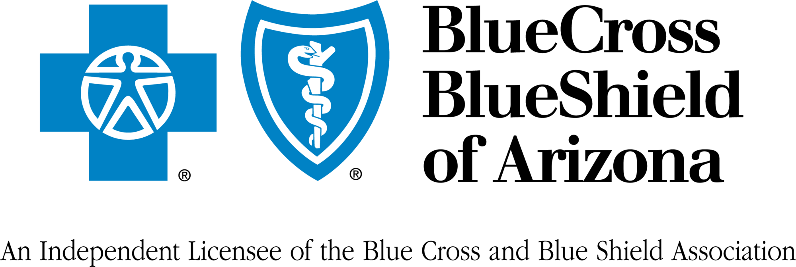

Meet Courtney
As the founder and owner of Rooted Resilience Counseling, I am dedicated to helping others navigate life's transitions, losses, and struggles.
Using an integrative, evidence-based approach, I offer a safe, collaborative space where clients feel empowered to explore and heal.
I work primarily with the adult and geriatric population who are working through the challenges of grief and trauma, particularly those related to their relationships or family dynamics.
We all experience grief, stress, and trauma—why go through it alone? Let me help you find the tools, skills, and confidence to takle your challenges
Specialties
- Anxiety and Depression
- Trauma and PTSD
- Grief, pregnancy loss, and infertility
- Pregnancy, Prenatal and Postpartum
Modalities
- EMDR
- CBT
- Emotion Focused
- Person-Centered
Both In-Person and Virtual settings available
Are you ready?
Let's cross that bridge together.
Specialties
- Anxiety and Depression
- Trauma and PTSD
- Grief, pregnancy loss, and infertility
- Pregnancy, Prenatal and Postpartum
Modalities
- EMDR
- CBT
- Emotion Focused
- Person-Centered
Both In-Person and Virtual settings available
Are you ready?
Let's cross that bridge together.
Endorsements
Stephanie Dove, Clinical Social Work/Therapist, AM, LCSW
Courtney is an amazing, kind, and dedicated therapist. She meets each client from an authentic and nonjudgmental perspective with particular expertise in trauma and how we, as human beings, respond to traumatic events. I highly recommend Courtney!
Sera Gray, Clinical Social Work/Therapist, LCSW, CCTS-I
Courtney is an amazing therapist! She has a very warm, accepting presence and is able to help clients feel at ease. She is highly skilled in the areas of grief and loss, trauma and women's reproductive issues. I highly recommend her!
Aubrey Skaggs, Licensed Professional Counselor, MS, LPC
Courtney is genuine, compassionate, and a trusted friend and therapist to many. Her warm, outgoing demeanor makes her easy to talk to and feel safe with. I highly recommend her, especially for those dealing with grief and loss.
Angelica Kennedy, Clinical Social Work/Therapist, LCSW, CST
Courtney is a compassionate, intuitive, and thoughtful clinician. She works hard to provide a safe space for all and has a lot of diverse experience. As a result, she understands and relates to clients who have a variety of symptoms and life struggles.
I accept the following insurances
